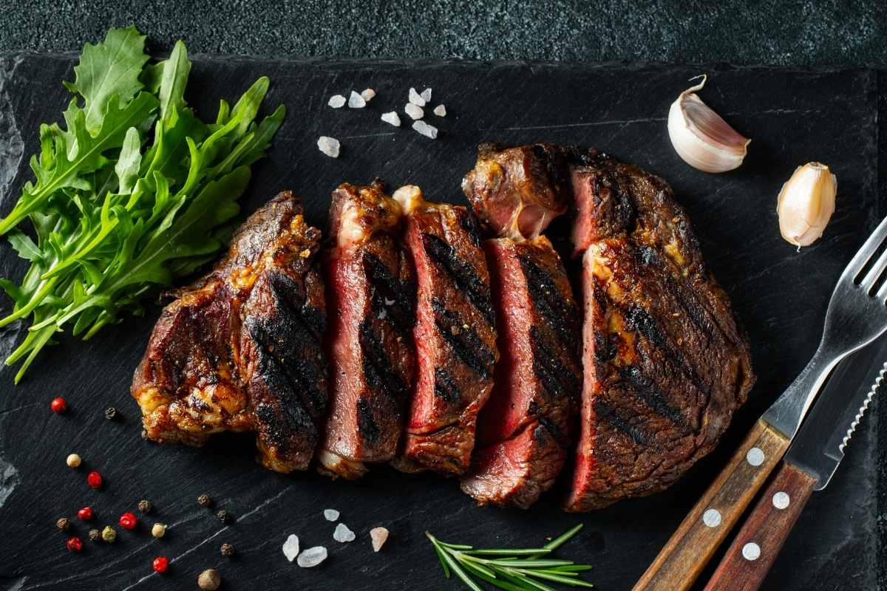

Beef Steak

Description
Follow the instructions to create the best beef steak you will ever eat!
Ingredients
- ¼ cup soy sauce
- ¼ cup Italian-style salad dressing
- ¼ cup barbeque sauce
- 4 tablespoons vegetable oil
- 1 clove garlic, peeled and minced
- steak seasoning to taste
- seasoning salt to taste
- salt to taste
- ground black pepper to taste
- 10 ounces beef sirloin steak
Steps
- In a medium bowl, mix soy sauce, Italian-style salad dressing, barbeque sauce, vegetable oil, garlic, steak seasoning, seasoning salt, salt and ground black pepper.
Place steak in the mixture. Cover and marinate in the refrigerator 12 hours, or overnight. Turn the steak once during marination.
-
Preheat an outdoor grill for medium to high heat and lightly oil grate.
-
Cook steak on the prepared grill 5 to 7 minutes per side, or to desired doneness.
Go back